{{ 'Welcome to Apache Kylin' | translate }}
{{ 'Extreme OLAP Engine for Big Data' | translate }}
{{ 'Tables' | translate }}
{{ 'Interactive' | translate }} {{ 'OLAP on hadoop' | translate }}
{{ 'Response time' | translate }}: {{restime/1000 | number: 2}}s
{{ 'Result length' | translate }}: {{curQuery.result.results.length}}
{{ 'Glance over' | translate }}
{{ 'Data Model' | translate }}
{{ 'Data Model' | translate }}: {{dataModel}}
{{ 'Fact Table' | translate }}: {{factTable}}
{{ 'Lookup Table' | translate }}: {{lookupTable}}
{{ 'Check' | translate }} {{ 'here' | translate }} {{ 'to learn the related terminology' | translate }}
Cube airline
Dimensions
| {{ 'Name' | translate }} | {{ 'Table Name' | translate }} | {{ 'Type' | translate }} | {{ 'Detail' | translate }} |
| {{dimension.name}} | {{dimension.table}} | {{t}} |
|
Measures
| {{ 'Name' | translate }} | {{ 'Expression' | translate }} | {{ 'Param Type' | translate }} | {{ 'Param Value' | translate }} | {{ 'Return Type' | translate }} |
| {{measure.name}} | {{measure.function.expression}} | {{measure.function.parameter.type}} | {{measure.function.parameter.value}} | {{measure.function.returntype}} |
{{ 'Build Workflow' | translate }}
{{ 'start' | translate }}
{{ 'Job Name' | translate }}: {{jobName}}
{{ 'Duration' | translate }}: {{(duration/60 | number:2) + ' mins'}}{{ 'MapReduce Waiting' | translate }}: {{(mrWaiting/60 | number:2) + ' mins'}}
{{ 'step' | translate }} {{step.order+1}}
{{step.name}}
{{ 'Data Size' | translate }}: {{dataSize(step.info.hdfs_bytes_written)}}
{{ 'Duration' | translate }}: {{step.exec_start_time != 0 ? (step.exec_end_time != 0 ? ((step.exec_end_time - step.exec_start_time)/1000/60 | number:2) + ' mins' : '0 seconds') : '0 seconds'}}
{{ 'end' | translate }}
{{ 'Duration' | translate }}: {{(duration/60 | number:2) + ' mins'}}{{ 'MapReduce Waiting' | translate }}: {{(mrWaiting/60 | number:2) + ' mins'}}
{{ 'step' | translate }} 4
{{steps[3].name}}
{{ 'Data Size' | translate }}: {{dataSize(steps[3].info.hdfs_bytes_written)}}
{{ 'Duration' | translate }}: {{steps[3].exec_start_time != 0 ? (steps[3].exec_end_time != 0 ? ((steps[3].exec_end_time - steps[3].exec_start_time)/1000/60 | number:2) + ' mins' : '0 seconds') : '0 seconds'}}
{{ 'step' | translate }} {{$parent.$index + 5}}
{{steps[$parent.$index + 4].name}}
{{ 'Data Size' | translate }}: {{dataSize(steps[$parent.$index + 4].info.hdfs_bytes_written)}}
{{ 'Duration' | translate }}: {{steps[$parent.$index + 4].exec_start_time != 0 ? (steps[$parent.$index + 4].exec_end_time != 0 ? ((steps[$parent.$index + 4].exec_end_time - steps[$parent.$index + 4].exec_start_time)/1000/60 | number:2) + ' mins' : '0 seconds') : '0 seconds'}}
{{ 'end' | translate }}
{{ 'Duration' | translate }}: {{(duration/60 | number:2) + ' mins'}}{{ 'MapReduce Waiting' | translate }}: {{(mrWaiting/60 | number:2) + ' mins'}}
{{ 'step' | translate }} {{step.order + 1}}
{{step.name}}
{{ 'Data Size' | translate }}: {{dataSize(step.info.hdfs_bytes_written)}}
{{ 'Duration' | translate }}: {{step.exec_start_time != 0 ? (step.exec_end_time != 0 ? ((step.exec_end_time - step.exec_start_time)/1000/60 | number:2) + ' mins' : '0 seconds') : '0 seconds'}}
{{ 'step' | translate }} {{step.order + 1}}
{{step.name}}
{{ 'Data Size' | translate }}: {{dataSize(step.info.hdfs_bytes_written)}}
{{ 'Duration' | translate }}: {{step.exec_start_time != 0 ? (step.exec_end_time != 0 ? ((step.exec_end_time - step.exec_start_time)/1000/60 | number:2) + ' mins' : '0 seconds') : '0 seconds'}}

{{ 'end' | translate }}
{{ 'Duration' | translate }}: {{(duration/60 | number:2) + ' mins'}}{{ 'MapReduce Waiting' | translate }}: {{(mrWaiting/60 | number:2) + ' mins'}}
{{ 'step' | translate }} {{$parent.$index + 10}}
{{steps[$parent.$index + 9].name}}
{{ 'Data Size' | translate }}: {{dataSize(steps[$parent.$index + 9].info.hdfs_bytes_written)}}
{{ 'Duration' | translate }}: {{steps[$parent.$index + 9].exec_start_time != 0 ? (steps[$parent.$index + 9].exec_end_time != 0 ? ((steps[$parent.$index + 9].exec_end_time - steps[$parent.$index + 9].exec_start_time)/1000/60 | number:2) + ' mins' : '0 seconds') : '0 seconds'}}